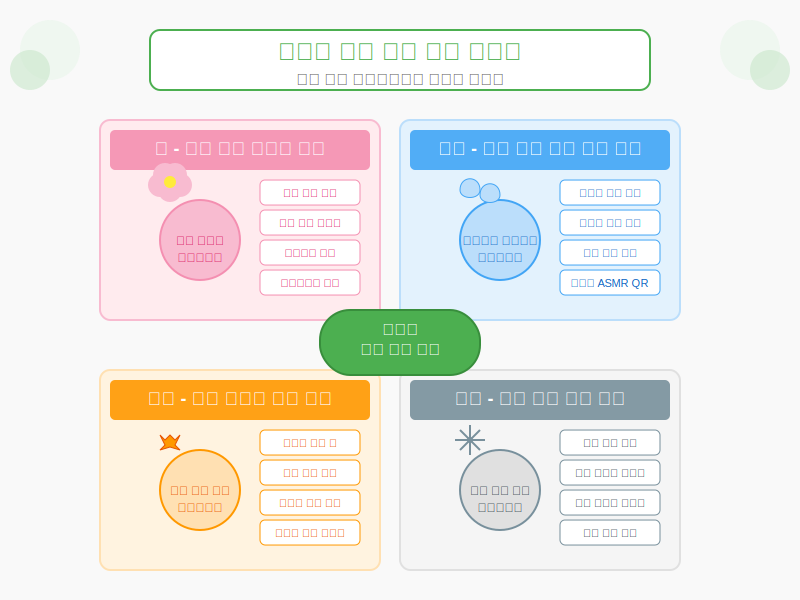
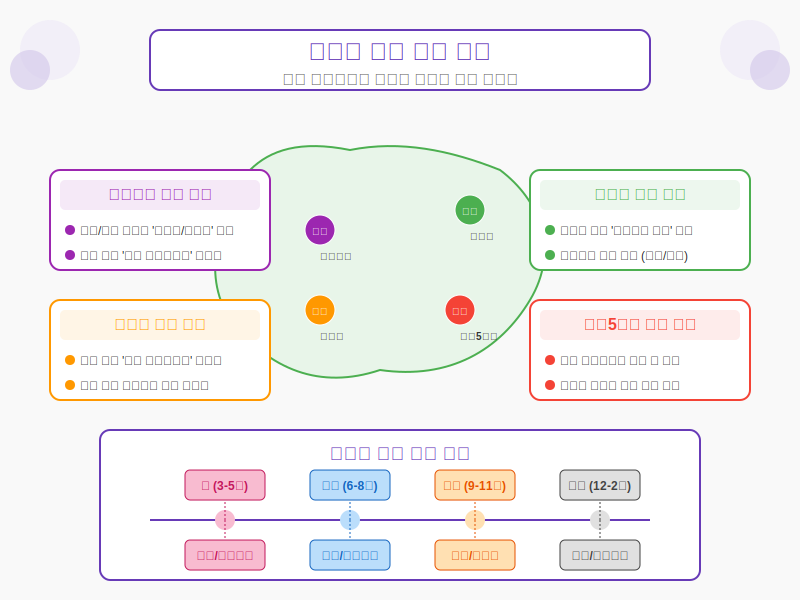
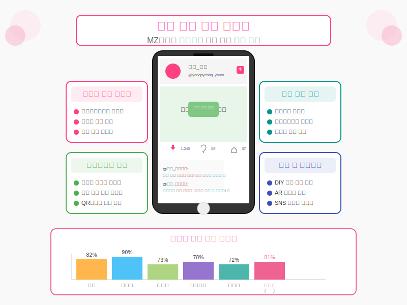
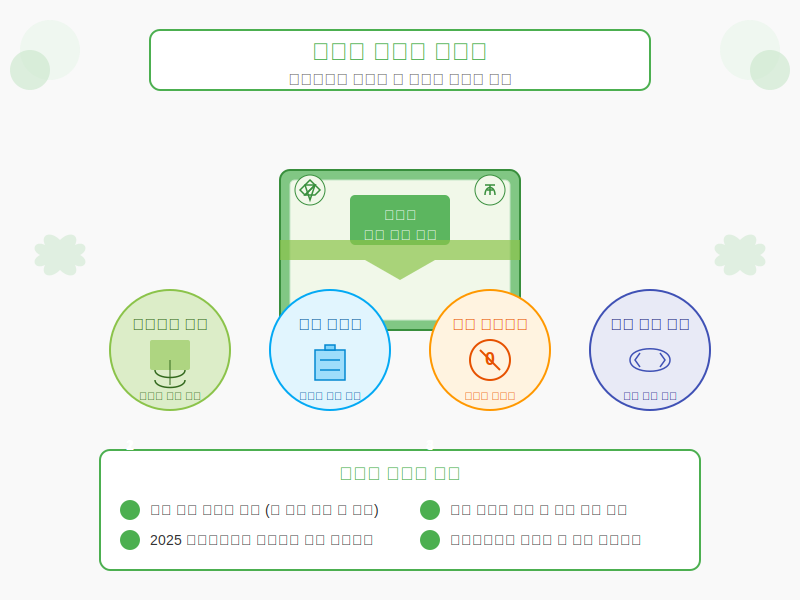

주요 개선방안

1. 사계절 양평 대표 간식 개발
전통 간식인 수수부꾸미를 베이스로 하되, 양평 특산물을 활용한 계절별 변형 버전 개발하여 연중 지속적인 관광 활성화를 유도합니다.
계절별 특산물 활용

2. 관광지 연계 판매 전략
지역 관광지별 특화 팝업 스토어 운영 및 지역 카페/음식점과의 협업 네트워크 구축을 통해 관광-먹거리 연계성을 강화합니다.
관광-먹거리 연계 강화

3. 청년 선호 간식 트렌드 반영
SNS에서 공유될 수 있는 비주얼과 스토리텔링 요소를 갖춘 간식 개발로 MZ세대의 관심을 유도합니다.
MZ세대 유입 촉진

4. 친환경 패키지 및 마케팅
생분해성 포장재 사용 및 디지털 마케팅 전략으로 환경 보전과 홍보 효과를 동시에 창출합니다.
환경 보전 가치 실현